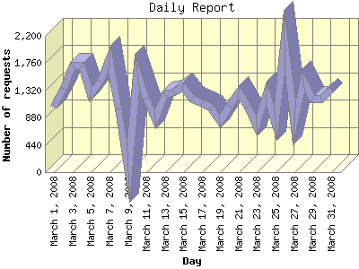

Report generated by Analog 6.0 and Report Magic 2.21
|
Web Server Statistics for "Harish Narayanan (hnarayan) - March 2008" Report generated by Analog 6.0 and Report Magic 2.21 |
The Daily Report identifies the activity for each day within the reporting period. Remember that one page hit can result in several server requests as the images for each page are loaded.

| Day | Number of requests | Number of bytes transferred | Percentage of the bytes | Percentage of the requests | |
|---|---|---|---|---|---|
| 1. | March 1, 2008 | 1,062 | 52.566 MB | 3.65% | 2.83% |
| 2. | March 2, 2008 | 1,343 | 30.086 MB | 2.09% | 3.58% |
| 3. | March 3, 2008 | 1,725 | 41.894 MB | 2.91% | 4.59% |
| 4. | March 4, 2008 | 1,719 | 88.147 MB | 6.11% | 4.58% |
| 5. | March 5, 2008 | 1,257 | 35.860 MB | 2.49% | 3.35% |
| 6. | March 6, 2008 | 1,462 | 53.665 MB | 3.72% | 3.89% |
| 7. | March 7, 2008 | 1,831 | 62.823 MB | 4.36% | 4.88% |
| 8. | March 8, 2008 | 1,024 | 64.999 MB | 4.51% | 2.73% |
| 9. | March 9, 2008 | 0 | 0.000 B | 0.00% | 0.00% |
| 10. | March 10, 2008 | 1,627 | 45.858 MB | 3.18% | 4.33% |
| 11. | March 11, 2008 | 1,194 | 52.822 MB | 3.66% | 3.18% |
| 12. | March 12, 2008 | 851 | 49.519 MB | 3.44% | 2.27% |
| 13. | March 13, 2008 | 1,261 | 69.815 MB | 4.84% | 3.36% |
| 14. | March 14, 2008 | 1,293 | 62.698 MB | 4.35% | 3.44% |
| 15. | March 15, 2008 | 1,380 | 26.184 MB | 1.82% | 3.68% |
| 16. | March 16, 2008 | 1,183 | 24.779 MB | 1.72% | 3.15% |
| 17. | March 17, 2008 | 1,114 | 19.400 MB | 1.35% | 2.97% |
| 18. | March 18, 2008 | 1,045 | 25.085 MB | 1.74% | 2.78% |
| 19. | March 19, 2008 | 820 | 29.301 MB | 2.03% | 2.18% |
| 20. | March 20, 2008 | 1,075 | 27.209 MB | 1.89% | 2.86% |
| 21. | March 21, 2008 | 1,289 | 137.658 MB | 9.55% | 3.43% |
| 22. | March 22, 2008 | 1,053 | 39.332 MB | 2.73% | 2.81% |
| 23. | March 23, 2008 | 755 | 40.433 MB | 2.81% | 2.01% |
| 24. | March 24, 2008 | 1,280 | 59.377 MB | 4.12% | 3.41% |
| 25. | March 25, 2008 | 802 | 50.589 MB | 3.51% | 2.14% |
| 26. | March 26, 2008 | 2,120 | 56.870 MB | 3.94% | 5.65% |
| 27. | March 27, 2008 | 803 | 66.195 MB | 4.59% | 2.14% |
| 28. | March 28, 2008 | 1,471 | 33.848 MB | 2.35% | 3.92% |
| 29. | March 29, 2008 | 1,185 | 24.611 MB | 1.71% | 3.16% |
| 30. | March 30, 2008 | 1,187 | 31.077 MB | 2.16% | 3.16% |
| 31. | March 31, 2008 | 1,332 | 38.917 MB | 2.70% | 3.55% |
Most active day March 13, 2008 : 328 pages sent. 2,120 requests handled. 59,632,400.00 served.
Daily average: 1,251 requests handled. 48.054 MB served.
This report was generated on May 20, 2008 21:39.
Report time frame March 1, 2008 00:00 to March 31, 2008 23:58.
| Web statistics report produced by: | |
 Analog 6.0 Analog 6.0 |  Report Magic 2.21 Report Magic 2.21 |